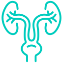

The department of Neurology in Tata Hospitals is one of the best in the state and is headed by a team of highly capable doctors who treat patients even with severe neurological disorders.
Pulmonology
Tata Hospitals believes that the skill of the doctor is the greatest asset in helping our patient recover. Apple Hospitals provides its doctors with the best facilities for treatment and has the latest equipment which is used worldwide at it disposable.
Neuro Physician
A doctor who specializes in neurology is called a neurologist. The neurologist treats disorders that affect the brain, spinal cord, and nerves, such as: Cerebrovascular disease, such as stroke.
Orthopedics
Our hospital’s orthopaedic department has the highest standards of orthopaedic care and is renowned for its expertise and resources in handling various types of services for patients in the field of orthopaedic medicine.
Urology

Apple Hospitals has one of the best facilities for urology and kidney transplantation in Tanuku. We are equipped with state of the art pre and post operative care facilities which are designed to world standards.
Paediatrics
Our Hospital offers one of the finest paediatric treatment services for children of different ages. We have highly specialized paediatric services which are required by patients who have various complications.
Radiology
Our radiology department offers the finest services compared to any other medical hospital in the country. We have the latest equipment which offers the best radiology and imaging services to our patients.
Cardio Thoracic Surgery
A cardiothoracic surgeon is a medical doctor who specializes in surgical procedures of the heart, lungs, esophagus, and other organs in the chest. This includes surgeons who can be called cardiac surgeons, cardiovascular surgeons.